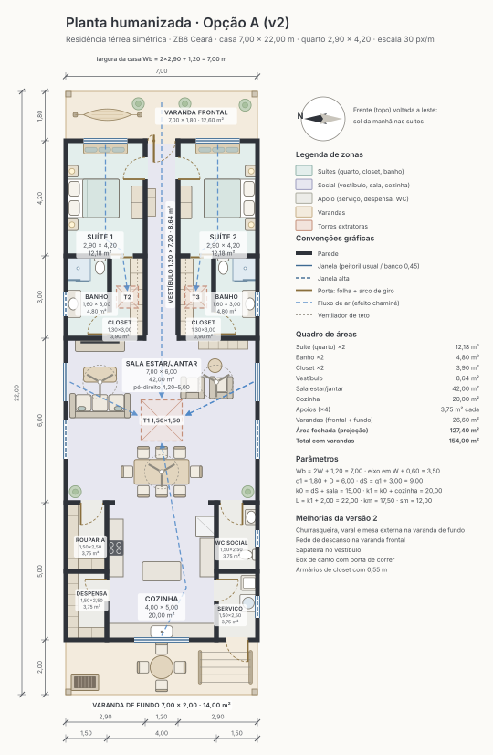

Opção A · compacta
7,00 × 23,25 m136,15 m² fechados
- Rede na varanda frontal; churrasqueira, varal e mesa ao fundo
- Sapateira no vestíbulo e armários de closet com 0,55 m
- Boxe acessível de 0,90 × 0,95 m, sem desnível, com banco articulado